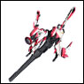
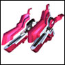

|
| 【图书馆】 莱布拉里 [技术] |
| 「第二次巴鲁法斯克大战」后期发现的巨大数据库。 位于「EDEN」的本星「朱诺」。 所有信息只有「管理者」「露香缇」可以访问。 |
| 【拉斯·特拉浮游防塁】 拉斯·特拉浮游防塁 [行星/卫星] |
| 巴鲁·法斯克军的浮游防塁 |
| 【幸运星】 Lucky Star[武器/战舰] | |
|  | 「EDEN」制造的「纹章机」之一。形式编号「GA-001」 1号机。 驾驶员是「梅尔优·樱叶」 必杀技是「高能加农」 与其他「纹章机」相比，既没有特别突出的地方，也没有劣势的部分，是平衡型。 「克洛诺斯弦筒」只搭载了一根 「梅尔优」凭借其罕见的运气获得了一定的输出。 主炮是镭射激光加农。此外还装备了导弹、火神炮、自动追踪型防御系统。 |
| 【拉比莉斯·哈切特】 拉比莉斯·哈切特 [战列舰/武器] |
| 阿姆斯·阿拉伊安斯的三侯爵之一朱尼埃布尔的旗舰。 |
| 【拉姆·特拉浮游防塁】 拉姆·特拉浮游防塁 [战列舰/武器] |
| 「巴鲁·法斯克」军的浮游防垒，拉斯·泰拉的强化型 |
| 【拉姆斯·吉奥突袭舰】 拉姆斯·吉奥突袭舰 [战列舰/武器] |
| 「巴鲁·法斯克」军的突袭舰 |
| 【兰格·吉奥重战舰】 兰格·吉奥重战舰 [战列舰/武器] |
| 「巴鲁·法斯克」军的重战舰 |
| 【兰迪】 兰蒂 [角色/通称] | |
| 战列舰露克西欧鲁的食堂厨师。与卡兹亚是烹饪学校时代的同期，在料理全部门（卡兹亚是糕点部门的顶尖毕业生）以顶尖成绩毕业。 喜欢女人，但在符文天使队中却不怎么受欢迎。因此，有时会对在符文天使队中受欢迎的卡兹亚感到嫉妒。不过，作为卡兹亚的朋友，有时会通过殴打来纠正他的错误，也有认真为卡兹亚着想的时候。 |
|
| 【兰花】 兰花 [角色/通称] | |
| 「月天使队」成员之一。全名是「兰花·芙兰波瓦兹」 纹章机GA-002「功夫大师」的驾驶员。 目前作为「EDEN」的大使驻留在「NEUE」的行星「马吉克」。 |
|
| 【兰花特别餐】 兰花特别版 [娱乐/杂货] |
| 艾尔西欧鲁的食堂里有的辣度1000倍的咖喱等兰花才能吃的特别料理。辣度是普通辣度的千倍。除了兰花以外，一口就会倒下的致命辣度，但阿妮丝经过修行后也能吃了。 |
| 【里格·泽奥战斗机】 リグ·ゼオ戦隊旗艦 [戦艦/兵器] |
| “巴鲁·法斯克”军的战斗机 |
| 【瑞奇·卡特】 瑞奇·卡特 [角色/通称] |
| GAI世界中著名的偶像。爱称为“瑞奇君” |
| 【修复波】 修复波 [必杀技] |
| “收获者”“初代艾达”释放的必杀技。 可以一次性修理多台纹章机。 由于某种原因无法使用时，会陷入非常艰难的战斗。 |
| 【莉莉】 Lili [角色/通称] | |
| 符文天使队成员之一。全名为“莉莉·C（焦糖）·雪酪” 纹章机RA-002“鹰隼者”的驾驶员。原本是NEUE的一大势力“塞尔达尔王国”的近卫骑士团成员。性格认真且正直，任务至上主义过重，有时会采取偏离的行动。 |
|
| 【符文天使队】 符文天使队 [军团/队] |
| “塔克特”在“NEUE”组织的新“天使队” 由“卡兹亚（主角）”、“艾普莉可特”、“卡尔/特基拉”、“娜诺娜诺”、“阿妮丝”、“莉莉”组成。存在男性成员，这是与“月天使队”的显著区别。 |
| 【露克西欧鲁】 露克西欧鲁 [兵器/战列舰] |
| 「第二次巴鲁法斯克大战」后新造的「EDEN」最新锐战列舰。 继承了「艾尔西欧鲁」的设计思想， 并基于与「巴鲁法斯克」的战斗数据，融入了许多创新设计。 |
| 【露香缇】 露香缇 [角色/通称] | |
| 存在于EDNE星系「朱诺」的「图书馆」的管理者 登场时被瓦因操纵，但后来被解放。 保留了被操纵时的记忆，虽然应该憎恨操纵她的瓦因，但最终未能完全憎恨。 |
|
| 【鲁夫特】 鲁夫特 [角色/通称] | |
| 从「塔克特」和「雷斯特」毕业的军官学校的教官，到「月天使队」的指挥官，再到「特兰斯巴尔皇国」的宰相。 全名是「鲁夫特·瓦伊岑」 在GA（无）中，为了帮助塔克特等人，承担了诱饵任务，并在关键时刻带来增援，是非常有能力的人物。 在军官学校时期发现了塔克特的才能，并将月天使队托付给他。 从某种意义上说，他的「识人之明」拯救了银河。 |
|
| 【娱乐休息室】 娱乐休息室 [设施] |
| 艾尔西欧鲁的娱乐设施。可以玩打拳机、抓娃娃机、弹珠、乒乓球等各种游戏。 阿妮丝破坏了设施的设备，但由于是薄荷经营的，债务不断增加。 |
| 【雷斯特】 雷斯特 [角色/通称] | |
| 在GAI中担任「塔克特」副官的人物。 全名是「雷斯特·库尔达拉斯」，代替不工作的塔克特处理「艾尔西欧鲁」的日常事务。与塔克特从军官学校时期就有交情。 冷淡且木讷，非常有能力，但被认为可能不适合指挥「天使队」。在塔克特离开艾尔西欧鲁后，担任艾尔西欧鲁舰长。 对通信员「阿尔茉」抱有好感，但似乎没有察觉。 |
|
| 【雷佐姆·梅亚·佐姆】 雷佐姆·梅亚·佐姆 [角色/通称] |
| 皇国的英雄塔克特·麦雅兹在「艾尔西欧鲁」赴任后立即与之战斗的男子。 在艾欧尼亚的政变时，立即支持艾欧尼亚，当艾欧尼亚被推翻后，迅速建立了「真·正统特兰斯巴尔皇国」，变节迅速。 塔克特忘记了他的名字，误称为「柠檬」或「梅松」。 |
| 【红】 红 [角色/通称] |
| 艾欧尼亚直属的特务战斗部队地狱犬队的一员。全名是「红·眼」 平时沉默寡言，只说必要的话。合理主义者，认为不利时即使能战斗也会冷静撤退。脸到胸口有被切开的伤痕。 |
| 【遗迹掠夺者】 遗迹掠夺者 [武器/战列舰] | |
|  | 「NEUE」制造的「纹章机」之一。形式编号RA-005 驾驶员是「阿妮丝·阿吉特」。速度优先的近战型 必杀技是「灭绝轰炸」 |
| 【罗威尔】 罗威尔 [角色/通称] |
| 特兰斯巴尔侵略舰队总司令官，巴鲁·法斯克的二号人物。 在多次战斗中立下功绩，深受盖伦信任的人物。作为特兰斯巴尔进军舰队总司令官向塔克特等人宣战，并追击，但由于维恩的星系数据提供合作而战败。 |
| 【失落科技】 失落科技 [技术] |
| “多维文明”时代发展起来的技术的总称。 基本上是各宇宙技术的整合， 但从各自的宇宙单位来看，可以确认到相当多的独创性。 虽然每天都在进行研究，但还有很多谜团，尚未完全掌握。 |
| 【罗塞尔】 罗泽尔 [角色/通称] | |
| 全名是“罗泽尔·马提乌斯” 搭乘的机体是首款量产型纹章机“圣血” 以历代顶尖成绩从驾驶员养成机构毕业。文武双全，无所不能的天才型人物，但实际上在背后不断努力，才拥有了现在的能力。待人接物也很好，很快就融入了天使队 |
|
| 感谢您向GA术语集投稿。 |
| 关于您投稿的术语，经过审查后，将在GAII最新作“永劫回归的时刻”豪华版特典的小册子，《GA百科全书》中刊登。 此外， 向您投稿的方，将以“为GA术语集贡献力量的方”的名义在此刊登您的名字。 这次收到了许多GA术语集的投稿，真的非常感谢。 |
© BROCCOLI